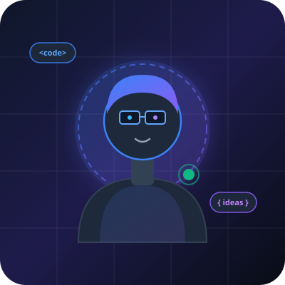

Open to Collaborate & Learn
Hi, I'm Nakata Ardinata
Exploring Technology, Building Ideas.
Tertarik pada web development, pemrograman modern, dan eksplorasi proyek digital untuk menciptakan solusi yang bermanfaat.

Online & Exploring
Portofolio 2026
Perkenalan
Tentang Saya
Dedikasi untuk belajar secara konsisten dan membangun solusi berbasis teknologi.
Kemampuan & Pembelajaran
Keahlian & Eksplorasi
Teknologi yang sedang saya pelajari dan gunakan dalam berbagai proyek eksperimen.
Portofolio Karya
Projek Pilihan
Koleksi project eksplorasi dan aplikasi yang pernah saya rancang dan bangun.
Mari Terhubung
Hubungi Saya
Tertarik untuk berdiskusi, berbagi ide, atau berkolaborasi dalam proyek pemrograman? Silakan hubungi saya melalui email atau media sosial.
valencianakata1447@gmail.com